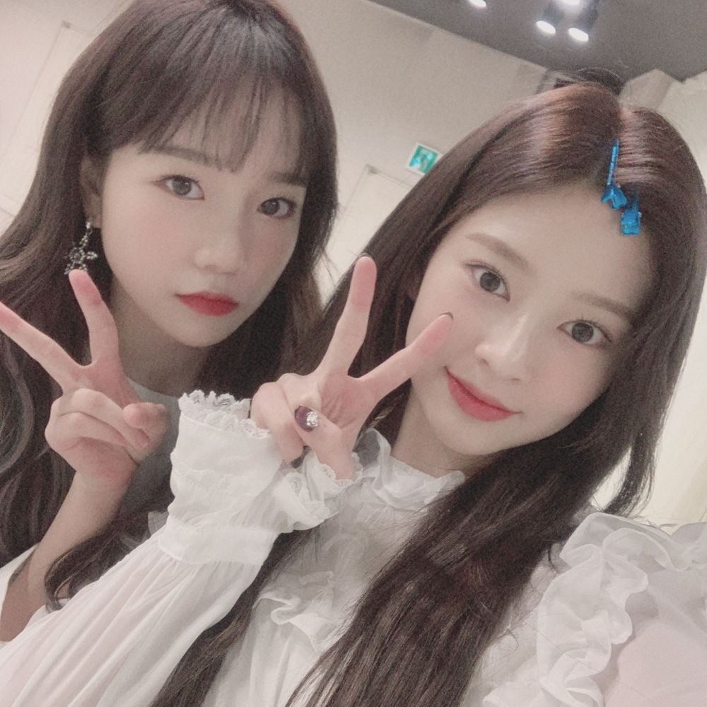

아내의 유혹에 빠져버렸구리
저번주부터 너무 멋있다고 생각했어😊
목소리 너무 좋은 거 아닙니까
누군지는 모르겠지만 진짜 좋은 사람인 것 같아
항상 끊임없이 연습하고 발전하려고 하는 모습이 멋있어!!
얘기하고 있으면 통하는 부분도 많아서 편하거든용
남아서 연습하다가 퇴근할 때가 많은데 둘이 연습 끝나고 걸어오면서 이야기하는 그 시간이 좋더라구요
원래 연습 끝나면 빨리 누워서 쉬고 싶은데 이야기하면서 힐링하는 느낌
서로 어떻게 하면 더 좋을지, 뭘 더하면 좋을 지 이야기하고 나면
든든한 느낌도 들고 '아 더 열심히 해야겠다' 하고 힘이 나요!!👍
친구란 참 좋은 것 같아요!!
노래 또 들으러 가야지ㅎㅎ